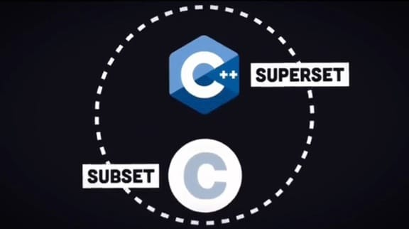
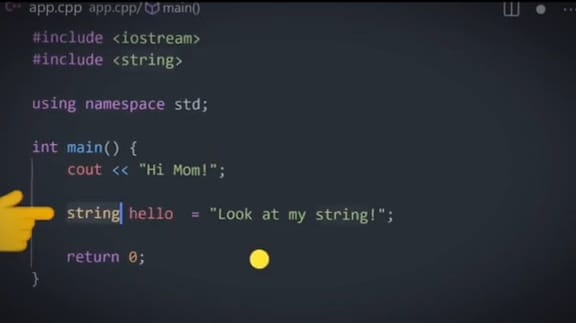

Bjarne Stroustrup
Bjarne Stroustrup
C++ adalah bahasa pemrograman yang dikembangkan oleh Bjarne Stroustrup pada tahun 1985. C++ adalah bahasa yang berorientasi objek dan merupakan pengembangan dari bahasa C, yang menambahkan fitur-fitur baru seperti kelas dan objek.
C++ awalnya dikembangkan sebagai ekstensi dari C untuk mendukung pemrograman berorientasi objek. Seiring berjalannya waktu, C++ telah menjadi salah satu bahasa pemrograman yang paling banyak digunakan di berbagai bidang.

#include <iostream>
using namespace std;
int main() {
cout << "Hello, World!" << endl;
return 0;
}
int age = 16;
string name = "adi";
for (int i = 0; i < 5; i++) {
cout << "Iterasi ke-" << i << endl;
}
if (age >= 16) {
cout << "Dewasa" << endl;
} else {
cout << "Anak-anak" << endl;
}
switch (age) {
case 16:
cout << "Usia 16 tahun" << endl;
break;
default:
cout << "Usia tidak terdefinisi" << endl;
}
try {
throw runtime_error("Kesalahan terjadi!");
} catch (const runtime_error &e) {
cout << "Exception: " << e.what() << endl;
}
class Person {
string name;
int age;
public:
Person(string n, int a) {
name = n;
age = a;
}
void display() {
cout << "Nama: " << name << ", Umur: " << age << endl;
}
};
